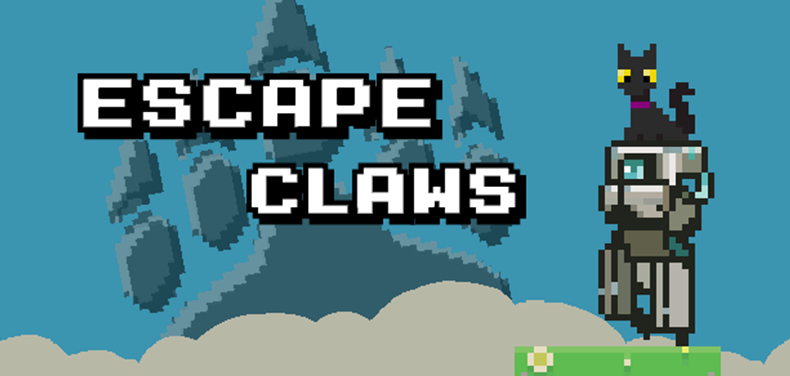
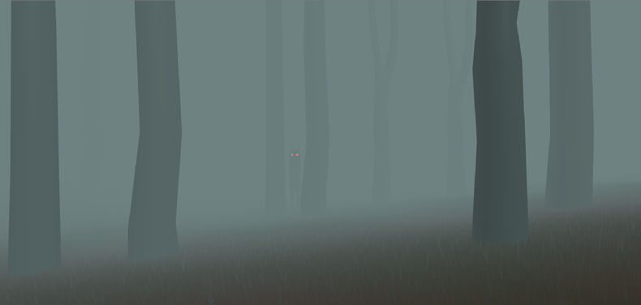

-
About
Hey, i'm Tyler, a full-stack engineer and game developer from Toronto. This is my portfolio and timeline of personal projects created over the years. -
2021/06
Deep Space
Stevie Pell Art Edan A Art Tyler Stein Programming Kieran Douglas Original Music Deep Space was created within 48 hours for the GMTK Game Jam 2021 under the theme of "Joined Together".
-
2021/02
Escape Claws

Stevie Pell Art & Animation Jason T Art & Animation Tyler Stein Programming Kieran Douglas Original Music Escape Claws was created within 7 days for the Brackeys Game Jam 2021.1 under the theme of "Stronger Together".
-
2020/03
A Monster In The Woods
Edan Abate 3D Art & Animation Stevie Pell 3D Art & Textures Denys "Kojah" Podkolzin Programming Tyler Stein Programming A Monster In The Woods was created within 48 hours for the 2020 LoJam under the theme of "From the outside looking in, it's hard to understand". Our team of four gathered at the Innovation Works in downtown London, Ontario along with almost 90 other participants for a weekend to work on games with a theme pertaining to mental health. From before the theme was announced we had decided to try working on a co-op game, and came up with the idea for this relatively quick. A twist on the classic item-collection horror games, you and another player navigate a foggy woods with the goal of collecting runes in order to destroy a mysterious monster. As the players navigate and seek the monster though, they may come across a surprise twist that begins to play in to the jam's theme.
-
2020/01
Core Bore
Kieran Douglas & Evan Smith Original Music Liza D (@lizadesya) 2D Art Jason T 3D Art, Animation & Development Edan A (@edanabate) 3D Art & Animation Denys 'Kojah' Podkolzin Programming & Development Mike VanHanteren Programming & Development Tyler S (@rockclaw) Programming & Development Core Bore Was created within 48 hours for the 2020 Global Game Jam under the theme of "Repair". Our core development team consisted of 6 people, most of us having participated in previous jams. After a difficult start trying to nail down a jam-ready concept, everyone found their roles in production and pulled through as a team to create this game. To me, there was a valuable lesson in seeing the increase in overhead resulting from working in a large team. While it gives time for care to be put in to specific parts, organizing how all those pieces fit together becomes an exponentially more difficult task, especially between varying skill levels.
-
2019/10
Bot-E Builder
Joshua L (@joshua-liew) 2D Art & Animation Andrew A (@aultmanandrew) Level Design & Audio Spencer D (@dreadbox) Programming Edan A (@edanabate) 2D Art & Animation Tyler S (@rockclaw) Programming Bot-E Builder was created within 72 hours for the Ludum Dare Game Jam under the theme of "Start with nothing". Our talented group worked dilligently to put together the ambitious idea of a game where you build up abilities by stealing them from other robots. It was a welcome challenge to coordinate building a tight game with a large group and distributed tasks, and ultimately a lot of fun. The game has a stable web release available here, the files for which can be found on my GitHub.
-
2019/08
Geo Twist
Liza D (@lizadesya) 2D Art & Animation, Level Design Edan A (@edanabate) 3D Art Tyler S (@rockclaw) Programming & Level Level Design Geo Twist was created within 48 hours for the 2019 GTMK Game Jam under the theme of "Only One". As a group of three collectively going in to our second jam, we had an idea of how to tackle the game quickly without getting caught on prototyping dead ends. A few hours of brainstorming and paper-prototyping some ideas led to this game, a test of reflexes and ability ot navigate levels with unorthodox controls. Much of the jam time was spent implementing visuals and building out levels. The game has a stable web release available here, the files for which can be found on my GitHub.
-
2018/12
Alexa, Run!
Liza D (@lizadesya) Art & Animation Jason T Art & Animation Edan A (@edanabate) Art & Animation Tyler S (@rockclaw) Programming & Level Construction Alexa, Run! Was created within 48 hours for the 2019 Global Game Jam under the theme of "What home means to you". As a group of four, and a first jam for most of us, it was a great learning experience and a lot of fun all around. The game has since had its code cleaned up and assets optomized for a stable web release, the files for which can be found on my GitHub.